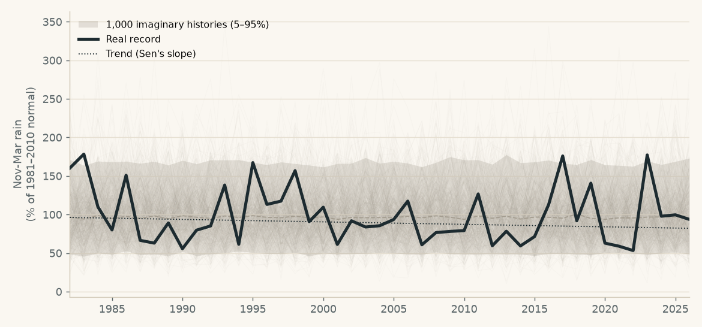
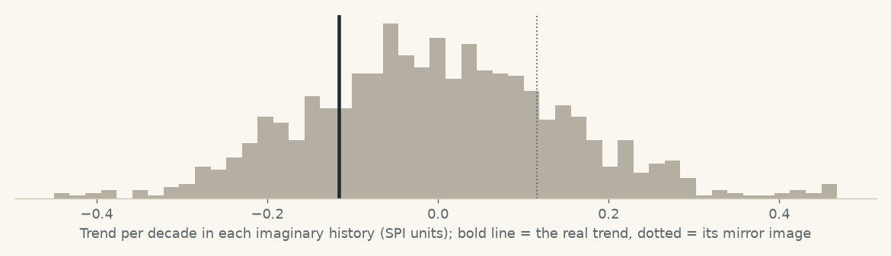
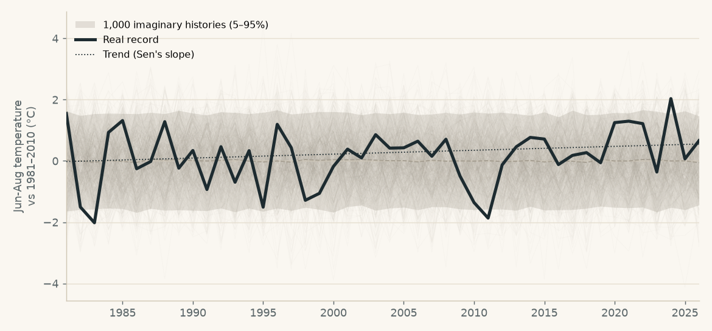
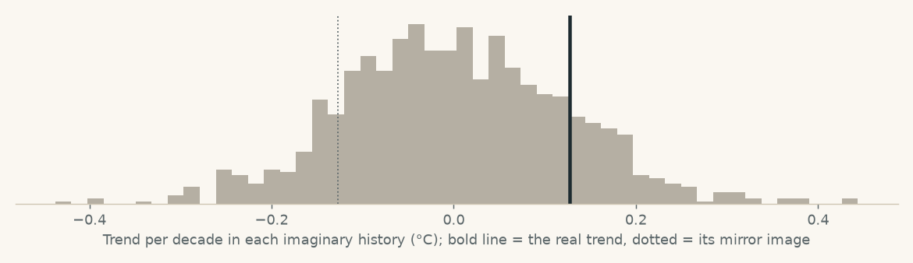

38.58°N, 121.49°W · judged on Nov-Mar precipitation
Sacramento, California, USA
Central Valley farm country; almost all rain falls Nov-Mar.
Not yet distinguishable from natural variation
Nov-Mar precipitation has a trend of −3.2 percentage points of normal rain per decade since 1982 (pointing drier), but natural variation alone can produce a trend that size. The real trend is bigger than the trend in 576 of 1,000 imaginary histories made of natural variation alone (p = 0.425).


- Trend (Sen's slope)
- −3.2 percentage points of normal rain per decade
- Size of the change
- -14.1 percentage points of normal over 1982–2026 along the trend line
- Last 10 years vs first 20
- -2 points of normal
- Normal
- 499 mm in a normal Nov-Mar, 1982–2010
- Imaginary histories (default)
- AR(1), lag-1 correlation 0.11, seed 132523
- Robustness: ARMA(0,0) chosen by AIC
- p = 0.344 · outside 657
- Robustness: IAAFT surrogates
- p = 0.329 · outside 672
- Data used
- 45 seasons, months up to 2026-09
Re-run this live, or change the season →
Share card (PNG) · All numbers (JSON)

Jun-Aug temperature
Not yet distinguishable from natural variation
Jun-Aug temperature has a trend of +0.13 °C per decade since 1981 (pointing warmer), but natural variation alone can produce a trend that size. The real trend is bigger than the trend in 703 of 1,000 imaginary histories made of natural variation alone (p = 0.298).


- Trend (Sen's slope)
- +0.13 °C per decade
- Size of the change
- +0.57 °C over 1981–2026 along the trend line
- Last 10 years vs first 20
- +0.75 °C
- Normal
- 24.2 °C average Jun-Aug temperature, 1981–2010
- Imaginary histories (default)
- AR(1), lag-1 correlation 0.09, seed 808427
- Robustness: ARMA(0,0) chosen by AIC
- p = 0.246 · outside 755
- Robustness: IAAFT surrogates
- p = 0.207 · outside 794
- Data used
- 46 seasons, months up to 2026-09
Your place vs the planet
Here, Jun-Aug temperature has changed by +0.13 °C/decade since 1981 (NASA POWER). Over the same years the whole planet warmed by +0.21 °C/decade and the 24-44°N latitude band by +0.32 °C/decade (NASA GISTEMP v4, annual means, 1981–2025). In 2025 the planet was +1.19 °C warmer than its 1951–1980 average.
GISTEMP blends land and ocean and covers whole years; POWER covers one point and one season, so the numbers are context, not a like-for-like comparison.
Would it have warned? Backtests on real events
We rerun the whole trial using only the data that existed before each event: the record is cut at the end of the year before (or before the season starts, whichever is earlier), and the baseline, the fitted noise and the 1,000 histories are all rebuilt from that shorter record. Nothing after the cut-off is used.
2011-2017 California drought (winter 2013-14) (Nov-Mar rain, 2014) · source
Would the signal have warned? No. Before the event the Nov-Mar record was not yet distinguishable from natural variation (the trend pointed drier, p = 0.148).
Using data up to 2013-10 (32 seasons): Not yet distinguishable from natural variation · trend −10.3% of normal/decade · outside 853 of 1,000 histories.
What happened: 59% of normal rain (296 mm, SPI -1.3), number 2 of 33 by that measure; drier than 90% of the years in 1,000 natural histories built only from the data before it. It stands out as extreme in this dataset.
Our seasonal forecast method, run with the same data, would have said:
Climatology says 33% each. It gave 55% to below normal.
Forecast track record
Before a season starts we publish the chance that it will be below, near or above normal (the middle third of 1981–2010). Each forecast is a file committed to the public repository; the commit time and the file's SHA-256 fingerprint prove it was not changed after the fact. When the season's data arrive we score it, misses included.
| Season | What | Chances | Result |
|---|---|---|---|
| DJF 2027 Dec-Feb | temperature normal: 8.8–9.4 °C | Waiting for the season's data | |
| DJF 2027 Dec-Feb | rain normal: 266.9–382.0 mm | Waiting for the season's data | |
Locked in commit e1c08df361 at 2026-11-16T00:30:56+05:30 · file unchanged since then ✓Issued 2026-11-15T18:51:59Z with data to 2026-09 · forecast file · SHA-256 e4073fd22e6d4ce497954037874528adf60ec172ab0728bb69aeb75f9ab6f178 | |||
Check a fingerprint yourself: download the file and run sha256sum (Linux/macOS) or certutil -hashfile FILE SHA256 (Windows).
Track record: the last 10 Dec-Feb seasons
The same temperature forecast method, re-run for each past season using only the data from before it (hindcasts, not locked). Its most likely category came true in 6 of 10; skill vs always saying 33/33/33: +9%.
| Season | Forecast | What happened | Most likely right? |
|---|---|---|---|
| DJF 2017 | below (8.4 °C) | ✗ | |
| DJF 2018 | above (10.1 °C) | ✓ | |
| DJF 2019 | below (8.8 °C) | ✗ | |
| DJF 2020 | above (10.1 °C) | ✓ | |
| DJF 2021 | above (9.6 °C) | ✓ | |
| DJF 2022 | near (9.3 °C) | ✗ | |
| DJF 2023 | below (7.9 °C) | ✗ | |
| DJF 2024 | above (10.6 °C) | ✓ | |
| DJF 2025 | above (10.1 °C) | ✓ | |
| DJF 2026 | above (10.8 °C) | ✓ |
How the method did on past seasons (hindcasts)
Each past season was forecast using only data from before it. These are not locked forecasts, so they estimate skill but prove nothing about honesty. Skill score: 1 = perfect, 0 = no better than always saying 33/33/33, below 0 = worse.
| Series | Seasons | Skill (RPSS) | Most likely category right | Verdict |
|---|---|---|---|---|
| Jun-Aug temperature | 1996–2026 (31 seasons) | -0.06 | 32% | worse than climatology |
| Nov-Mar rain | 1996–2026 (31 seasons) | -0.06 | 39% | worse than climatology |
Sources
- NASA POWER monthly point data for this place: API request (T2M, PRECTOTCORR; −999 treated as missing). Raw response cached in the repository.
- NASA GISTEMP v4 global and zonal annual means (1951–1980 base).
- Event sources are linked in each backtest above.
What this does not show: a signal means the change is bigger than natural variation can explain. It does not, on its own, prove the cause. See limitations.